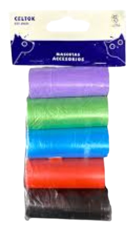
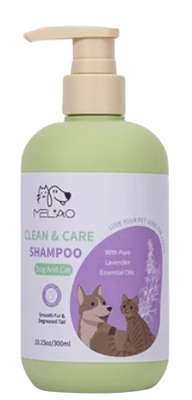
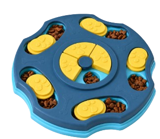
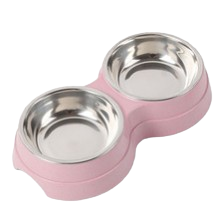

SUMINISTROS PARA TUS MASCOTITAS
listas de necesidades (alimentos, cobijas, artículos de limpieza.)
VISITA EL LOCAL SUMINISTRO BUENA PATA

Bolsitas para la popo de tu mascotitas.

Shampoo para perros/gatos.

Juego para perros/gatos, para sus croquetitas y puedan difrutar la experiencia juguetona.

Plato dividido en 2 (Agua y Croquetas), para perros/gatos.